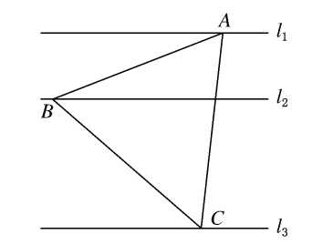
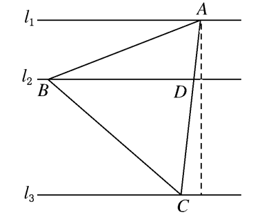
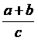
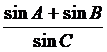
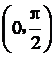
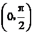
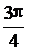
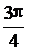
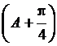
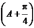

周五数学小测试（正余弦定理）
1、在△ABC中，已知B＝45°，c＝2，b＝3，则A的值是( )
A．15° B．75°
C．105° D．75°或15°
[答案] D
[解析] ∵sinB＝sinC，
∴sinC＝b＝3＝2.
∵0°＜C＜180°.∴C＝60°或120°，
∴A＝75°或15°.
2、 在锐角三角形ABC中，b＝1，c＝2，则a的取值范围是( )
A．1<a<3 B．1<a<
C．<a< D．不确定
[答案] C
[解析] ∵b<c，△ABC为锐角三角形，
∴边c与边a所对的角的余弦值大于0，
即b2＋a2－c2>0且b2＋c2－a2>0，
∴1＋4－a2>0.
∴3<a2<5，∴<a<.
3、在△ABC中，a，b，c分别是∠A，∠B，∠C的对边，且cos22＝2c，则△ABC是( )
A．等边三角形 B．直角三角形
C．钝角三角形 D．等腰三角形
解析 2＝2sinC，∴sinCcosA＝sinB.
∴sinAcosC＝0，∴cosC＝0，∴∠C＝2.
答案 B
4、△ABC中，a，b，c分别是∠A，∠B，∠C的对边，如果2b＝a＋c，∠B＝30°，△ABC的面积为2，那么b等于( )
A.2 B．1＋
C.2 D．2＋
解析 ∵2b＝a＋c，∴a2＋c2＝4b2－2ac.
∵S△ABC＝2，∠B＝30°，
∴2acsinB＝2，即4ac＝2.
∴ac＝6，∴a2＋c2＝4b2－12.
∴cosB＝2ac＝2×6＝2.
∴b2＝4＋2，∴b＝1＋.
答案 B
5、在△ABC中，关于x的方程(1＋x2)sinA＋2xsinB＋(1－x2)sinC＝0有两个不等的实数根，则A为( )
A．锐角 B．直角
C．钝角 D．不存在
[答案] A
[解析] 把已知方程整理得(sinA－sinC)x2＋2sinB·x＋(sinA＋sinC)＝0，
Δ＝4sin2B－4(sinA－sinC)(sinA＋sinC)＞0，
即sin2B＋sin2C－sin2A＞0.
∴b2＋c2－a2＞0，∴cosA＞0，可知A为锐角．
6、如图，l1，l2，l3是同一平面内的三条平行直线，l1与l2间的距离是1，l2与l3间的距离是2，正三角形ABC的三顶点分别在l1，l2，l3上，则△ABC的边长是( )

A．2 B.3
C.4 D.3
解析 如图，设AB＝a，则由已知AD＝3a.
在△ABD中，由余弦定理，知cosA＝2＝2AB·AD.①
又S△ABC＝2BD·3＝4a2，得BD＝6，
代入①式，得a＝3.

答案 D
7、△ABC中，A＝3，BC＝3，则△ABC的周长为( )
A．4sin3＋3 B．4sin6＋3
C．6sin3＋3 D．6sin6＋3
答案 D
解析 A＝3，BC＝3，设周长为x，由正弦定理知sin A＝sin B＝sin C＝2R，
由合分比定理知sin A＝sin A＋sin B＋sin C，
即3＝3.
∴2＋sin B＋sin(A＋B)＝x，
即x＝3＋23
＝3＋23
＝3＋23
＝3＋23
＝3＋6cos B
＝3＋6sin6.
8、

9、在△ABC中，若A>B，则下列关系中不一定正确的是________．
①sin A>sin B ②cos A<cos B
③sin 2A>sin 2B ④cos 2A<cos 2B
③
解析 在△ABC中，A>B，sin A>sin B，cos A<cos B.
∴1－2sin2A<1－2sin2B，
∴cos 2A<cos 2B.
10、在Rt△ABC中，C＝90°，且A，B，C所对的边a，b，c满足a＋b＝cx，则实数x的取值范围是 ．
(1，］ 点拨:x＝＝＝sin A＋cos A＝sin .又A∈，∴
.又A∈，∴ <A＋<.∴
<A＋<.∴ <sin≤1.即x∈(1，
<sin≤1.即x∈(1， ］．
］．

12、在△ABC中，已知∠A＝3，边BC＝2，设∠B＝x，周长为y.
(1)求函数y＝f(x)的解析式和定义域；
(2)求y的最大值及取得最大值时△ABC的形状．
解 (1)△ABC的内角和为∠A＋∠B＋∠C＝π，
由∠A＝3，∠B>0，∠C>0，得0<∠B<3.
由正弦定理，知AC＝sinAsinB＝3sinx＝4sinx，
AB＝sinAsinC＝4sin－x.
∴y＝4sinx＋4sin－x＋23.
(2)∵y＝4(sinx＋2cosx＋2sinx)＋2
＝4sin6＋26，
∴当x＋6＝2，即x＝3时，y取得最大值6，此时△ABC为等边三角形．
13、如图所示，已知在四边形ABCD中，AD⊥CD，AD＝10，AB＝14，∠BDA＝60°，∠BCD＝135°，求BC的长．

解 在△ADB中，∠BDA＝60°，AB＝14，AD＝10，
由余弦定理得：AB2＝AD2＋BD2－2AD·BD·cos60°，
即142＝100＋BD2－2×10×2×BD.
∴BD2－10BD－96＝0，BD＝16或BD＝－6(舍)．
在△DCB中，∠BDC＝90°－∠BDA＝90°－60°＝30°，∠DCB＝135°，
∴由正弦定理得：sin135°＝sin30°，
∴BC＝2＝8.
14、在△ABC中，角A、B、C所对的边分别为a、b、C．已知cosC＋(cosA－sinA)cosB＝0.
(1)求角B的大小；
(2)若a＋c＝1，求b的取值范围．
[解析] (1)由已知得－cos(A＋B)＋cosAcosB－sinAcosB＝0，
即有sinAsinB－sinAcosB＝0.
因为sinA≠0，所以sinB－cosB＝0.
又cosB≠0，所以tanB＝.
又0<B<π，所以B＝3.
(2)由余弦定理，有b2＝a2＋c2－2accosB．
因为a＋c＝1，cosB＝2，有b2＝3(a－2)2＋4.
又0<a<1，于是有4≤b2<1，即有2≤b<1.